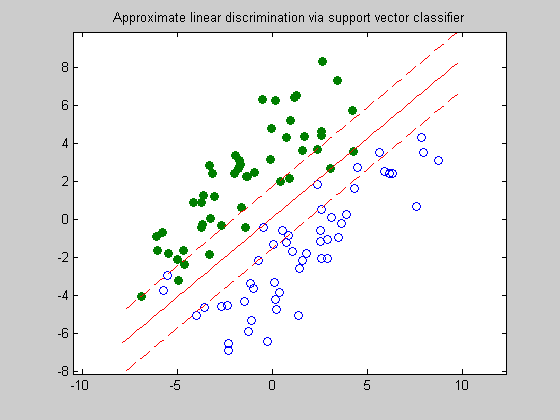

Figure 8.11: Approximate linear discrimination via support vector classifier
n = 2;
randn('state',2);
N = 50; M = 50;
Y = [1.5+0.9*randn(1,0.6*N), 1.5+0.7*randn(1,0.4*N);
2*(randn(1,0.6*N)+1), 2*(randn(1,0.4*N)-1)];
X = [-1.5+0.9*randn(1,0.6*M), -1.5+0.7*randn(1,0.4*M);
2*(randn(1,0.6*M)-1), 2*(randn(1,0.4*M)+1)];
T = [-1 1; 1 1];
Y = T*Y; X = T*X;
g = 0.1;
cvx_begin
variables a(n) b(1) u(N) v(M)
minimize (norm(a) + g*(ones(1,N)*u + ones(1,M)*v))
X'*a - b >= 1 - u;
Y'*a - b <= -(1 - v);
u >= 0;
v >= 0;
cvx_end
linewidth = 0.5;
t_min = min([X(1,:),Y(1,:)]);
t_max = max([X(1,:),Y(1,:)]);
tt = linspace(t_min-1,t_max+1,100);
p = -a(1)*tt/a(2) + b/a(2);
p1 = -a(1)*tt/a(2) + (b+1)/a(2);
p2 = -a(1)*tt/a(2) + (b-1)/a(2);
graph = plot(X(1,:),X(2,:), 'o', Y(1,:), Y(2,:), 'o');
set(graph(1),'LineWidth',linewidth);
set(graph(2),'LineWidth',linewidth);
set(graph(2),'MarkerFaceColor',[0 0.5 0]);
hold on;
plot(tt,p, '-r', tt,p1, '--r', tt,p2, '--r');
axis equal
title('Approximate linear discrimination via support vector classifier');
Calling SDPT3: 204 variables, 100 equality constraints
------------------------------------------------------------
num. of constraints = 100
dim. of socp var = 3, num. of socp blk = 1
dim. of linear var = 200
dim. of free var = 1 *** convert ublk to lblk
*******************************************************************
SDPT3: Infeasible path-following algorithms
*******************************************************************
version predcorr gam expon scale_data
NT 1 0.000 1 0
it pstep dstep pinfeas dinfeas gap mean(obj) cputime
-------------------------------------------------------------------
0|0.000|0.000|9.1e-01|8.3e+01|4.0e+04| 7.177291e+01| 0:0:00| chol 1 1
1|1.000|0.982|8.8e-08|1.6e+00|8.9e+02| 7.193377e+01| 0:0:00| chol 1 1
2|1.000|0.565|1.0e-07|6.9e-01|3.7e+02| 4.838697e+01| 0:0:00| chol 1 1
3|1.000|0.164|3.9e-07|5.8e-01|2.8e+02| 3.218912e+01| 0:0:00| chol 1 1
4|1.000|0.836|2.2e-07|9.5e-02|5.5e+01| 1.439848e+01| 0:0:00| chol 1 1
5|0.937|0.799|2.8e-08|1.9e-02|9.8e+00| 4.223290e+00| 0:0:00| chol 1 1
6|1.000|0.164|5.4e-08|1.6e-02|5.4e+00| 3.105056e+00| 0:0:00| chol 1 1
7|1.000|0.421|1.2e-08|9.2e-03|3.0e+00| 2.498001e+00| 0:0:00| chol 1 1
8|1.000|0.383|4.3e-09|5.7e-03|1.6e+00| 2.030656e+00| 0:0:00| chol 1 1
9|1.000|0.319|1.5e-09|3.9e-03|1.2e+00| 1.972999e+00| 0:0:00| chol 1 1
10|0.974|0.430|6.0e-10|2.2e-03|6.2e-01| 1.826270e+00| 0:0:00| chol 1 1
11|1.000|0.266|1.3e-10|1.6e-03|5.5e-01| 1.855190e+00| 0:0:00| chol 1 1
12|0.807|0.330|9.6e-11|1.1e-03|4.0e-01| 1.823723e+00| 0:0:01| chol 1 1
13|1.000|0.279|7.2e-11|7.8e-04|3.0e-01| 1.809876e+00| 0:0:01| chol 1 1
14|1.000|0.363|7.1e-11|5.0e-04|2.1e-01| 1.805533e+00| 0:0:01| chol 1 1
15|1.000|0.379|1.7e-10|3.1e-04|1.3e-01| 1.803373e+00| 0:0:01| chol 1 1
16|1.000|0.433|8.1e-11|1.8e-04|7.4e-02| 1.807594e+00| 0:0:01| chol 1 1
17|1.000|0.661|5.8e-11|5.9e-05|2.3e-02| 1.817257e+00| 0:0:01| chol 1 1
18|0.974|0.948|2.1e-12|3.1e-06|1.2e-03| 1.825232e+00| 0:0:01| chol 1 2
19|0.932|0.452|8.4e-12|2.4e-06|6.5e-04| 1.825428e+00| 0:0:01| chol 2 2
20|1.000|0.952|5.6e-12|9.3e-07|1.7e-04| 1.825691e+00| 0:0:01| chol 1 1
21|0.933|0.949|4.2e-12|2.4e-07|5.4e-05| 1.825701e+00| 0:0:01| chol 2 2
22|1.000|0.985|4.7e-11|7.8e-08|2.5e-06| 1.825700e+00| 0:0:01| chol 2 2
23|1.000|0.988|1.4e-11|3.6e-09|6.5e-08| 1.825700e+00| 0:0:01|
stop: max(relative gap, infeasibilities) < 1.49e-08
-------------------------------------------------------------------
number of iterations = 23
primal objective value = 1.82570024e+00
dual objective value = 1.82570018e+00
gap := trace(XZ) = 6.50e-08
relative gap = 1.40e-08
actual relative gap = 1.39e-08
rel. primal infeas = 1.43e-11
rel. dual infeas = 3.57e-09
norm(X), norm(y), norm(Z) = 1.3e+01, 4.2e-01, 1.7e+00
norm(A), norm(b), norm(C) = 5.4e+01, 1.1e+01, 2.4e+00
Total CPU time (secs) = 1.1
CPU time per iteration = 0.0
termination code = 0
DIMACS: 7.8e-11 0.0e+00 4.3e-09 0.0e+00 1.4e-08 1.4e-08
-------------------------------------------------------------------
------------------------------------------------------------
Status: Solved
Optimal value (cvx_optval): +1.8257
